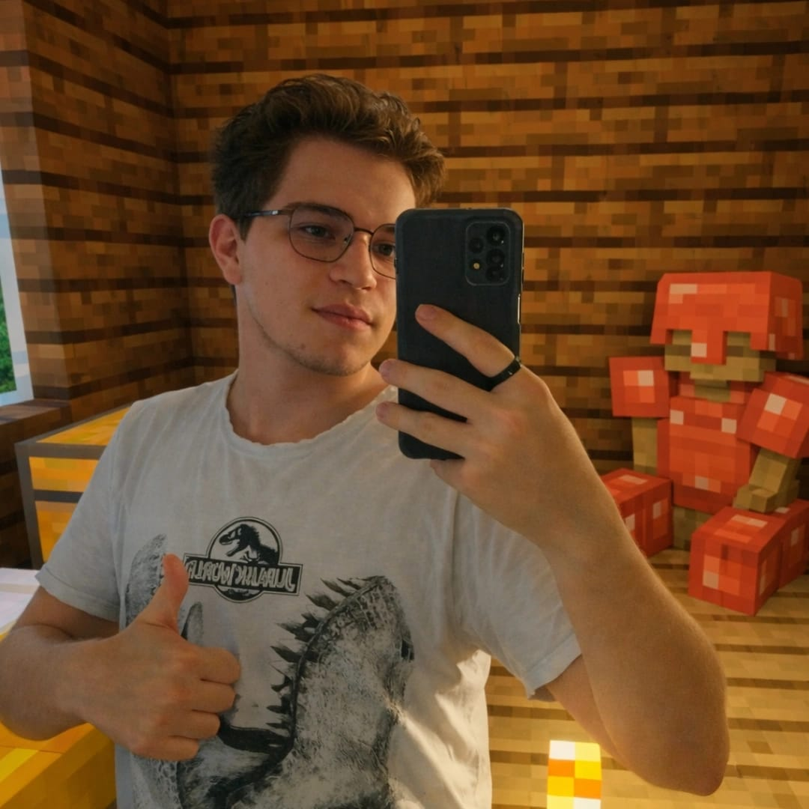
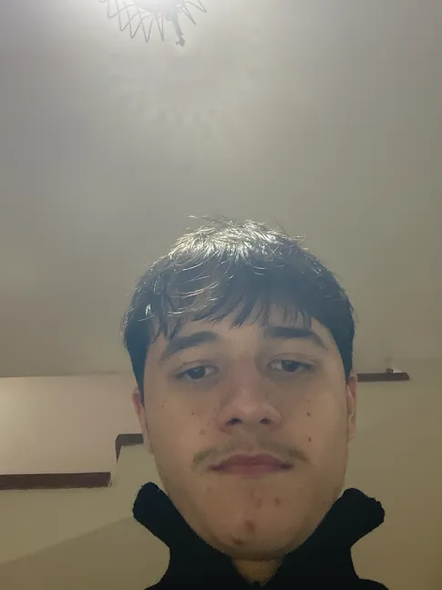
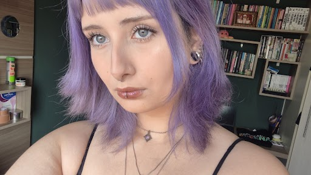
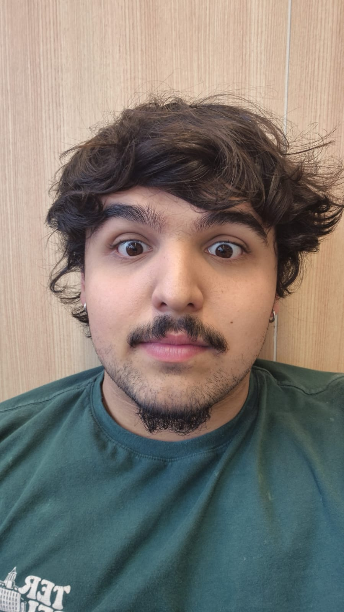

E se a sala de aula pudesse virar um laboratório?
Nem sempre é possível realizar experimentos na prática. O SimuLab aproxima teoria e experiência com simuladores interativos e jogos educativos que ajudam a transformar conteúdos escolares em descobertas.
De um trabalho escolar a uma plataforma em construção.
O SimuLab nasceu de uma pergunta simples: como tornar o aprendizado mais próximo da prática quando nem sempre há um laboratório disponível?
Uma ideia para o Projetos Livres
O projeto começou durante a pesquisa para um trabalho obrigatório de Projetos Livres, no segundo ano do ensino médio. A proposta era explorar maneiras de aproximar os estudantes de experiências práticas por meio da tecnologia.
Experimentar sem depender de um laboratório físico
As simulações se tornaram o centro da proposta. A referência do PhET ajudou a inspirar essa direção, enquanto a equipe buscava criar experiências e abordar conteúdos da maneira que imaginava serem úteis para os estudantes.
✦ Inspirado por iniciativas como o PhETOs jogos também entram em cena
Depois que uma professora de Língua Portuguesa conheceu a ideia e sugeriu trabalhar os conteúdos por meio da gamificação, os jogos educativos passaram a fazer parte do projeto. Assim, o SimuLab começou a reunir duas formas de explorar o conhecimento.
O retorno no terceiro ano
No terceiro ano, a disciplina de Projetos Livres abriu uma nova oportunidade de retomar a ideia. Decidimos voltar ao SimuLab para aprimorar o que já existia, desenvolver novas ideias e ampliar a plataforma. Foi também nessa etapa que Davi Luiz entrou para a equipe; ele não participava do grupo original. Hoje, já temos jogos e simuladores funcionais, e o projeto continua evoluindo.
Não apenas imaginar.
Ver acontecer.
A proposta é tornar conceitos abstratos mais fáceis de explorar: observar o que muda, testar possibilidades e aprender com o resultado.
Simulações para investigar
Altere variáveis e observe fenômenos. Em uma simulação de dilatação térmica, por exemplo, é possível explorar como o aquecimento influencia o comprimento de um objeto.
Jogos para desafiar
Desafios e objetivos transformam conteúdos escolares em experiências de jogo. A ideia é praticar o que foi aprendido de um jeito mais dinâmico e envolvente.
Uma ferramenta para ensinar e explorar.
O foco principal são estudantes do ensino médio, mas o SimuLab também foi pensado para apoiar professores e enriquecer explicações em sala de aula.
Para professores
Usar uma simulação durante a explicação, visualizar um fenômeno junto com a turma e tornar conceitos mais concretos.
Para estudantes
Explorar jogos e simuladores por conta própria, testar possibilidades e revisar conteúdos em seu ritmo.
Para aprender com curiosidade
Mais do que observar uma resposta pronta: experimentar, comparar resultados e fazer novas perguntas.
Quatro integrantes,
uma construção coletiva.

Erik Bernardo
Programação principalResponsável pela maior parte da programação e pela implementação técnica de diferentes partes da plataforma.

Davi Luiz
Desenvolvimento e ideiasEntrou para a equipe nesta nova etapa do SimuLab, contribuindo com ideias, programação e desenvolvimento de páginas e recursos do site.

Mariana Alice
Pesquisa de conteúdoLidera a pesquisa dos conteúdos escolares e investiga como os fenômenos e conceitos podem ser representados nas simulações.

Antonio Carlos
MarketingResponsável pelo marketing e divulgação do site, liderando a produção de conteúdo para redes sociais e mapeando estratégias para ampliar o alcance do projeto junto ao público escolar.
Transformar explicações em experiências.
Queremos que o SimuLab seja uma ferramenta útil no dia a dia da aprendizagem: algo que um professor possa abrir durante a aula para demonstrar um fenômeno e que um estudante possa explorar por curiosidade, mesmo fora da sala.
Explorar os simuladores ↗O SimuLab é um projeto escolar em desenvolvimento, construído para explorar novas maneiras de ensinar, aprender e descobrir.